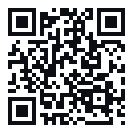

Кастомизация без границ
Бар, панели, виджеты, обои, шрифты, папки на столе, даже системные меню Windows — всё перекрашивается и перестраивается. Не «тёмная тема», а целый образ рабочего стола, который вы собираете сами.
ArWi — приложение для кастомизации Windows. Свой бар вместо панели задач, панели виджетов, темы, живые обои и мини-папки. И всё это — почти без нагрузки на компьютер.
Что такое ArWi
Бар, панели, виджеты, обои, шрифты, папки на столе, даже системные меню Windows — всё перекрашивается и перестраивается. Не «тёмная тема», а целый образ рабочего стола, который вы собираете сами.
ArWi работает всегда, поэтому не имеет права мешать. Своё нативное ядро вместо браузера внутри, сон, когда стол не виден, реакция на события вместо постоянных проверок. Игры и работа не замечают, что он запущен.
Возможности
ArWi не просто меняет вид. Он добавляет то, чего в Windows не хватало годами.
Шесть видов полосы — ArWi, Windows 11, Windows 10, Waybar, Dock и с подписями. Любой край экрана, длина, толщина, скругление, цвет или градиент до 8 цветов. Значки растут волной под курсором, как в доке macOS, а под развёрнутым окном бар прячется и выезжает с лёгкой инерцией.
Погода, заметки, плеер, календарь, помодоро, монитор ресурсов, валюты, GitHub, Discord, чек-лист, быстрые вставки текста. Включайте нужные, выключайте лишние, ставьте панель к любому краю. Заметку можно оторвать прямо на стол.
Win-панель и поиск в пяти стилях. Забыли переключить раскладку? ArWi ищет сразу на всех языках: «ашкуащч» найдёт Firefox. Новые программы появляются в поиске сами, без перезапуска.
Компактные папки с ярлыками прямо на рабочем столе. Круг, капсула, шестиугольник, срезанные углы — и своё оформление под каждую тему. Выделение как в Проводнике.
Окна прилипают к краям и друг к другу, отпущенное окно мягко доезжает по инерции. Цветная скруглённая рамка вокруг окон — под цвет темы.
У каждой темы — свои обои, статичные и живые. Видео декодирует видеокарта, частоту кадров можно ограничить, а под игрой обои сами встают на паузу.
Контекстные меню Проводника, Блокнота и других классических программ перекрашиваются в цвета темы — любой цвет фона, текста и подсветки.
Оптимизация
Приложение, которое работает постоянно, обязано быть незаметным. Поэтому в ArWi нет самой прожорливой вещи, какая только бывает у красивых оболочек, — браузера внутри.
Первая версия ArWi рисовала интерфейс встроенным браузером — так делают многие. Он ел память и процессор и тормозил всё вокруг. Поэтому ArWi переписан целиком на собственном нативном ядре: каждое окно, панель и виджет рисуются напрямую видеокартой.
Схема: сколько слоёв стоит между вашим кликом и картинкой
Конструктор
Упрощённый макет, но с настоящими темами, обоями и анимациями ArWi. Щёлкайте по бару, логотипу и лупе, таскайте окна, наводите на значки.
На телефоне макет мелкий: приблизьте его пальцами или откройте сайт на компьютере.
Темы
Тема в ArWi — это целый образ: палитра, стиль карточек, обои, логотип и форма бара, оформление папок и даже системных меню. Сменили тему — сменился весь стол. Нажмите на любую, чтобы примерить её в конструкторе.
Любую тему можно скопировать в свою одной кнопкой и крутить дальше:
Тема может сама меняться по обстоятельствам: темнеть к ночи по реальному закату, менять обои в дождь, реагировать на сезон или заряд батареи. Краски переезжают плавно, без мигания.
Тему можно сохранить в один файл .arwitheme — с обоями и даже видео внутри — и поделиться ею. Двойной щелчок по файлу ставит тему.
Уже сейчас тема может нести свой стилевой лист поверх оформления. А разработчик работает над тем, чтобы тему можно было буквально написать кодом — не только менять готовые настройки, а перестроить окна, анимации и поведение почти до неузнаваемости. Для тех, кому мало ползунков.
Telegram-канал
Новости, ролики и скриншоты новых функций выходят сначала в канале. Там же объявим выход в Steam. Пишите в комментариях, что хотите увидеть в ArWi, — разработчик их читает и часто отвечает.
